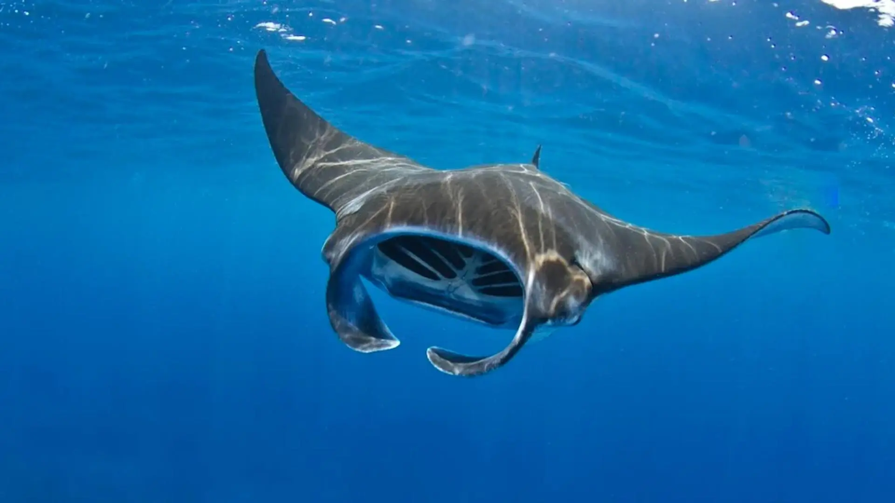
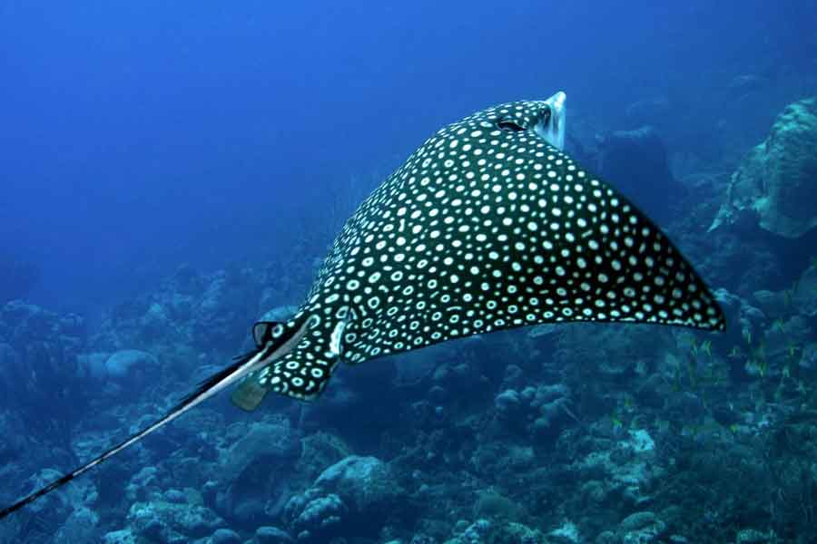
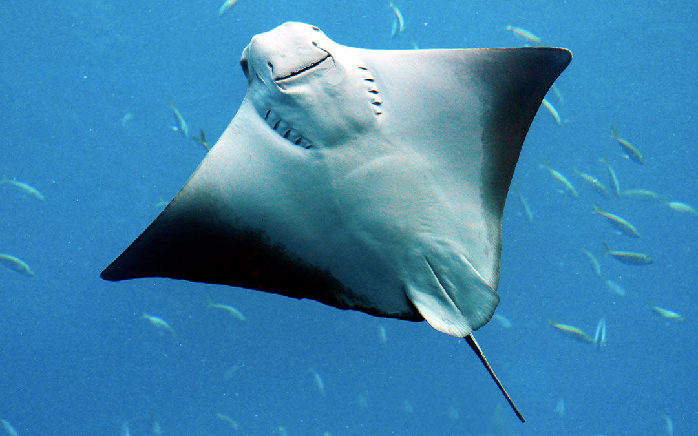

Información General
La manta raya gigante es la raya más grande del mundo, con una envergadura de hasta 8 metros. Se alimenta por filtración y consume grandes cantidades de zooplancton. Las mantas rayas gigantes son animales migratorios de crecimiento lento, con poblaciones pequeñas y muy fragmentadas, dispersas por todo el mundo.
La principal amenaza para la manta raya gigante es la pesca comercial, ya que la especie es objeto de pesca comercial y, además, queda atrapada como captura incidental en diversas pesquerías a nivel mundial a lo largo de su área de distribución.
Las mantas rayas son especialmente valoradas por sus branquias, que se comercializan internacionalmente. En 2018, la NOAA Fisheries incluyó a la especie en la lista de especies amenazadas según la Ley de Especies en Peligro de Extinción. A diferencia de otras rayas, estas criaturas no poseen un aguijón venenoso, lo que las hace seguras para el encuentro con buceadores.

Son conocidas por su gran inteligencia y sus aletas cefálicas que parecen cuernos, lo que les valió el apodo de "peces diablo" en el pasado, aunque son seres extremadamente pacíficos.

Se desplazan por el agua con una gracia inigualable, filtrando alimento mientras viajan largas distancias por los océanos tropicales.
